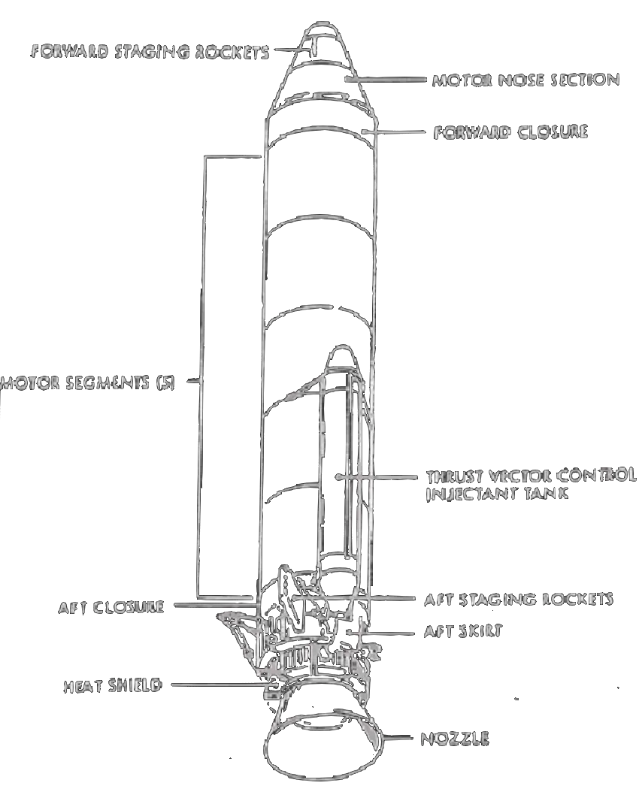
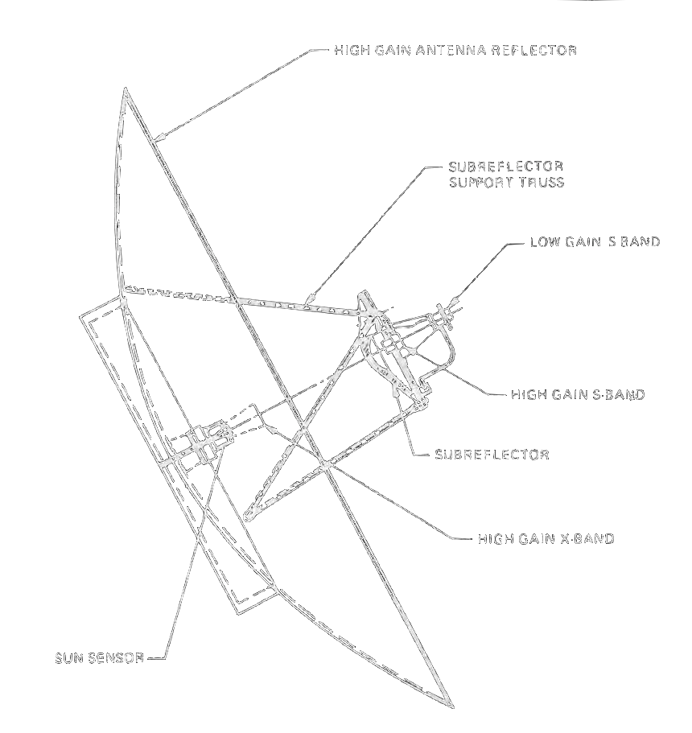
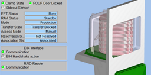
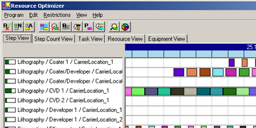
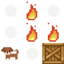
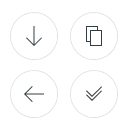

Hi, my name is Enrico Hüttig.
My goal is to help people to work with complex software in an easy and beautiful way.

The trick is to break big problems down into smaller and independent pieces. Then I prioritize all the little problems and try to find a simple solution for all of them. It is sometimes necessary for me to extend my knowledge or even learn new skills in the process.
It‘s not always easy to articulate ideas or thoughts. But it‘s important to understand the stakeholder‘s needs and also listen to feedback during the design and development iterations.
Work is more than just doing the things I am supposed to do. Currently I support the HR department and interview job candidates about their technical skills. I give on-the-job training to new coworkers and train customers.
My first computer was a KC85/1 from VEB Kombinat Robotron in Dresden. From this time on I taught myself various programming languages like C, C++, Turbo Pascal, Java and C#.
From 1991 to 1997 I studied physics at the Technical University of Dresden, specializing in semiconductor physics and optics, and graduated with a diploma.
I work as a professional software developer since 1997 in the area of machine and factory automation. As a counterbalance to my work, I am interested in natural sciences and ride my bicycle.

Give people new possibilities Help others to be successful Satisfied customers Satisfied colleagues Self improvement
Accessible software Stable software Quality source code Maintainable source code Defined processes Clear communication Learning constantly Iterative development
Simple source code Simple development process TDD Reliable error handling Requirements engineering Usability engineering UI design Automate everything
C#, C++ SEMI Standards Visual Studio JetBrains Rider SonarQube xUnit TFSVC and Git Humor Reasoning

Extension, modernization and maintenance of existing software. Create the ability to migrate between different software releases. (2015)
Company benefits: software product becomes more reliable and stable, shorter and easier update process.
What I have learned: requirements engineering, test automation, usability engineering, agile development, SCRUM master.
Development and commissioning of MES software for production of solar cell and solar receivers. The software was deployed in Taiwan, Thailand, Spain, and the USA. (2010)
Company benefits: worldwide use of a new product, establish and improve process for software versioning.
What I have learned: international project experience, English language.

Standalone application for production planning and optimization, advance calculation of resource allocation, evaluation according to various criteria. (2003)
Company benefits: new application as extension to an existing product family, introduction of C# as a modern programming language.
What I have learned: design patterns, unit tests, performance analysis and optimization.

(22.01.2023) Let’s see how fast I can learn new skills and apply my own expectations to myself ;-) Read more...
Is it possible to have a test coverage for 100% of your source code? And not just in the delivered version but all the time during development? Read more...

A custom icon set for a tool control software library. WPF provides the Path Markup Syntax to create scalable icons. I wanted to learn and explore it. Read more...